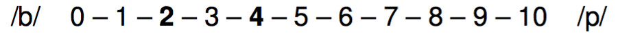
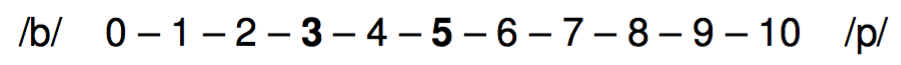

La percepción categórica
y la psicolingüística del bilingüismo
Joseph V. Casillas
PhD Candidate
Plan
- Resumen de PsychoPy2
- Mini experimento
- La percepción categórica
- Resultados del experimento
PsychoPy2
PsychoPy2
¿Qué es?
- PsychoPy2 es un programa que sirve para realizar experimentos
- Se trata de presentar estímulos
- palabras
- imágenes
- sonidos
- etc.
- Se utiliza para crear experimentos de psycología, psycofísica, neurociencia, lingüística, etc.
PsychoPy2
¿Por qué me interesa?
- Es gratis
- Es una aplicación crosplataforma
- Podéis recrear los experimentos que estudiáis en clase
Experimentos
- PsychoPy2 sirve para...
- 2AFC
- AX, AXB, ABX
- Decisión léxica (con masked prime)
- Identificación de fonema
- Juicios de gramaticalidad
- etc.
Para empezar
Descargad la versión actual de PsychoPy2
- http://sourceforge.net/projects/psychpy/files/PsychoPy/
- También podéis buscar en google 'psychopy'
- Escoged la versión 'standalone'
Descargad archivos experimentales
La interfaz
La interfaz (Modo 'coder')
import itertools
def iter_primes():
# an iterator of all numbers between 2 and +infinity
numbers = itertools.count(2)
# generate primes forever
while True:
# get the first number from the iterator
prime = numbers.next()
yield prime
for p in iter_primes():
if p > 1000:
break
print p

La interfaz (Modo 'builder')

- Provee una GUI
- Representación lineal de la sequencia del experiment ('flow')
- Vista de los componentes
La interfaz (Experiment flow)
- El experimento avanza de manera lineal de izquierda a derecha
- Cada elemento (una rutina) termina antes de avanzar
- Parecido a las diapositivas de una presentación power point

Las rutinas
- Vista individual de cada 'slide'
- Compuestas de una serie de componentes que realizan una tarea
Lista de componentes
- Stimuli
- Texto/Audio/Img/Video
- Responses
- Keyboard, lykert scales, button boxes, mouse tracking, eye tracking, microphone
- Custom
- Python code
Demo
2AFC
- Two alternative forced choice
- También conocido como
identificationoclassification - Se presenta un estímulo (normalmente audio)
- El estímulo se clasifica/identifica como una de dos opciones

Haced lo siguiente:
- Descargad el experimento 2AFC here
- Abrid el archivo '
2AFC.psyexp'
Haced lo siguiente:


- Descargad el experimento 2AFC here
- Abrid el archivo '
2AFC.psyexp' - Haced click in el icono verde
- Participant = tus iniciales (ej. 'jc')
- Session = 001
- Haced click en 'ok'
- Usad las flechas del teclado para responder
- 'ba' (izquierda)
- 'pa' (derecha)
- Responded lo más rápido posible sin hacer errores
Haced lo siguiente:
Al terminar...
- Id a la carpeta
2AFC>data - Buscar el archivo que termina en '.
csv' - Eviádmelo (jvcasill@email.arizona.edu) con el asunto
2AFC
Después... considerad las siguientes preguntas
- ¿Podemos producir un sonido (pongamos [ba]) varias veces de exactamente la misma manera? ¿Por qué sí o no?
- ¿Qué consecuencias tiene vuestra respuesta con respecto a la percepción del habla?
La percepción categórica
¿Cuáles son las diferencias entre /t/ del inglés y /t/ del español?
Inglés vs. español
El sonido /t/ del español difiere del /t/ del inglés en cuanto al punto de articulación y VOT
- Punto de articulación: ¿Dónde se produce el contacto al pronunciar /t/?
- /t/ del español es dental
- /t/ del inglés es alveolar
Inglés vs. español
El sonido /t/ del español difiere del /t/ del inglés en cuanto al punto de articulación y VOT
- VOT (voice-onset time): En las consonantes oclusivas, es la diferencia (en milisegundos) entre la explosión de la consonante y el comienzo de la fonación.
- Es el resultado de la coordinación de gestos articulatorios (la explosión y la vibración de las cuerdas vocales)
- VOT puede ser negativo, 0, o positivo y se usa para contrastar entre sonido sordos/sonoros
VOT

- Español e inglés mantienen un contraste entre /p t k/ and /
b d g / - La realización fonética es diferente
- Español: /d/ tiene lead VOT y /t/ tiene short-lag VOT
- Inglés: /d/ tiene short-lag VOT y /t/ tiene aspiración

La percepción del habla
- ¿Cómo diferenciamos entre el habla y el ruido?
- ¿Cómo extraemos la información relevante de una señal pobre?
La ausencia de invarianza
- Los sonidos del habla nunca se pronuncian de la misma forma
- Si digo
taco[ˈta.ko] 10 veces, nunca es físicamente igual - ¿Cómo es que somos capaces de relacionar el sonido con el concepto de un fonema?
La percepción categórica
- "Equal sized physical differences are not equal sized psychologically."
- No percibimos los continuos como continuos...
- Las diferencias dentro de la misma categoría se disminuyen
- Las diferencias entre categorías se aumentan


La percepción categórica
- ¿Cómo estudiamos la percepción categórica?
- 2AFC (identificación)
- AX (discriminación)






La percepción categórica
- "Equal sized physical differences are not equal sized psychologically."
- No percibimos los continuos como continuos...
- Las diferencias dentro de la misma categoría se disminuyen
- Las diferencias entre categorías se aumentan
La percepción categórica y el bilingüismo
Pallier et al. (1997)
La percepción categórica
Pallier et al. (1997)
- Bilingües secuenciales tempranos: español/catalán, catalán/español
- El catalán cuenta con un contraste vocálico que no existe en español (/e/-/ɛ/)
La percepción categórica
Pallier et al. (1997)
La percepción categórica
Pallier et al. (1997)


La percepción categórica
Pallier et al. (1997)
- Conclusión
- Los bilingües tempranos español/catalán no perciben el contraste entre las vocales /e/-/ɛ/ de manera categórica
- Estar expuesto a una edad temprana (durante el periodo sensible) no parece ser suficiente
La percepción categórica y el bilingüismo
Language-specific stop perception in highly proficient Heritage Speakers
La percepción categórica
Bilingual Language Modes (Grosjean, 1998)
[...] state of activation of the bilingual's languages and language processing mechanisms at a given point in time (Grosjean, 2002)
- Activation of languages increases/decreases as a function of communicative setting
- Bilingual mode: both languages activated
- Unilingual mode: one language activated
- Some bilinguals can reduce cross-language interactions in a unilingual setting (Antoniou et al. 2010; Magloire and Green 1999)
- Do highly proficient HSs inhibit cross-language interaction effects a unilingual setting?
Method
Participants
- 9 highly proficient Spanish/English bilinguals
- 6 females
- 3 males
- Young adults: ages 20-26
- Bilingual Language Profile (BLP) questionnaire (-10.16)
Method
Materials
- Female simultaneous bilingual speaker
- ba/pa productions
- 'fri' [fɾi] and [fɹi] productions
- append lead voicing for /ba/, aspiration for /pa/ (Gonzales & Lotto, 2013)
- Two 13-step continua (-60ms to 60ms, 10ms increments)
- 'Spanish' ba[fɾi]-pa[fɾi]
- 'English' ba[fɹi]-pa[fɹi]
Method
Procedure

- Participants completed two 2AFC identification tasks
- Session 1: Spanish - ba[fɾi]-pa[fɾi]
- All instructions, materials in Spanish
- All correspondence with investigator in Spanish
- Session 2: English (24 hrs later) - ba[fɹi]-pa[fɹi]
- All instructions, materials in English
- All correspondence with investigator in English
- Session 1: Spanish - ba[fɾi]-pa[fɾi]

- Overall probability of selecting /pa/ decreases by 38% when hearing English stimuli
Summary of findings
- Higher proportion of 'pafri' responses in Spanish session
- HSs shifted their perceptual boundary to accommodate English stimuli in session 2
Discussion
- HSs maintain separate phonetic systems, shift between them according to the language context
- No (less) cross-language activation in unilingual settings
Percepción categórica en SPAN 459
Dealing with results
- Specify the output format
- Import results directly into stats program
library(knitr)
read_chunk('./assets/scripts/analysis.R')
glimpse(df)
## Observations: 130
## Variables: 4
## $ stim (dbl) -30, 10, -20, 50, 0, 20, -50, 40, -10, -40, -60, 3...
## $ response (dbl) 0, 0, 0, 0, 1, 1, 0, 1, 0, 0, 0, 1, 1, 0, 1, 1, 1,...
## $ rt (dbl) 0.5678380, 0.9005539, 0.5168958, 0.2171149, 0.4516...
## $ participant (fctr) jc, jc, jc, jc, jc, jc, jc, jc, jc, jc, jc, jc, j...
Conclusión
- Ahora sabéis lo básico de psychopy2
- Podéis utilizarlo para crear experimentos psycolingüísticos
- Tenéis acceso a la plantillas que podéis modificar
- La percepción categórica
- "Equal sized physical differences are not equal sized psychologically."
- No percibimos los continuos como continuos...
More resources
References
- Gray, J. & Pasmanter, N. (2013). github
- Lejuez, C. W., Aklin, W. M., Zvolensky, M. J., & Pedulla, C. M. (2003). Evaluation of the Balloon Analogue Risk Task (BART) as a predictor of adolescent real-world risk-taking behaviours. Journal of adolescence, 26(4), 475-479.
- McGuire, G. (2010, in progress) A Brief Primer on Experimental Designs in Speech Perception Research. http://people.ucsc.edu/~gmcguir1/
- Simonet, M. (2012). El diseño de experimentos para el estudio de la percepción del habla. Laboratory Approaches to Romance Phonology Conference. El Colegio de México, México D.F.